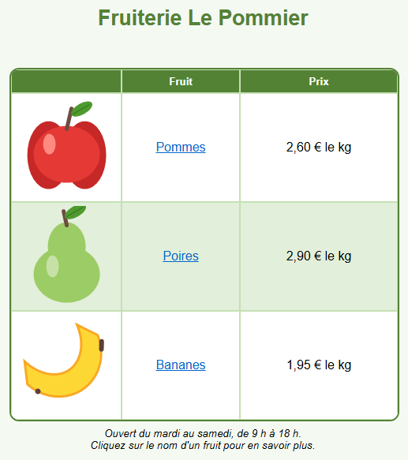

Parcours d'apprentissage › Leçon 8
De la conception au site web
.html), comprendre
le code HTML et rouvrir plus tard une page enregistrée pour continuer à travailler.
Conception ou page web ?
| Fichier | Qu'est-ce que c'est ? | S'ouvre avec |
|---|---|---|
.htd | Votre conception, sur laquelle vous continuez à travailler. | Advanced Html Designer |
.html | La page web, telle que les visiteurs la voient. | n'importe quel navigateur (et aussi le concepteur) |
Voir le code HTML
Cliquez en bas sur Cliquez ici pour des fonctions supplémentaires. Le volet comporte deux onglets :
- Document Html : la page web complète, avec les blocs de texte et les réglages de la page.
- Tableau Html : uniquement le tableau, à coller dans une page web existante.
Les éléments les plus importants du code :
| Code | Signification |
|---|---|
<table> | début du tableau (</table> en est la fin) |
<tr> | une ligne (table row) |
<td> | une cellule (table data) ; colspan et rowspan pour les cellules fusionnées |
style="..." | la mise en forme : couleurs, bordures, alignement, taille de police |
<a href="..."> | un hyperlien |
<img src="..."> | une image ; l'image elle-même est intégrée dans le code (data:image/png...) |
<div class="designer-textblock"> | un bloc de texte |
En faire une page web
- Ouvrez l'exemple (ou votre propre conception) et dépliez le volet.
- Dans l'onglet Document Html, cliquez sur
 Enregistrer le document HTML.
Enregistrer le document HTML. - Choisissez un dossier et un nom, par exemple
fruiterie.html. - Double-cliquez sur le fichier dans l'Explorateur : il s'ouvre dans votre navigateur. Cliquez sur les liens pour les tester.
Comme les images sont intégrées dans le code, votre page web est un seul fichier. Vous pouvez l'envoyer par e-mail, le
mettre sur une clé USB ou le placer sur un site web. Chez beaucoup d'hébergeurs, la page d'accueil doit s'appeler index.html.
Votre page web en PDF
Vous voulez imprimer votre travail ou l'envoyer à quelqu'un ? Dans le volet, onglet Document Html, cliquez sur PDF (Enregistrer en PDF) et choisissez un nom. Le PDF reçoit le format de papier de la page (onglet Paramètres) et a le même aspect que dans le navigateur de test : avec les couleurs, les images, les blocs de texte et des liens cliquables. Un long tableau continue sur la page suivante.
Rouvrir une page web
Un fichier .html enregistré avec Enregistrer le document HTML contient aussi, de façon invisible, toute votre
conception. Ouvrez-le avec  Ouvrir le concepteur de tableau et vous pouvez
simplement continuer, même sans le fichier
Ouvrir le concepteur de tableau et vous pouvez
simplement continuer, même sans le fichier .htd. Pour en savoir plus : Fichiers & export.
Exercice
Enregistrez l'exemple sous fruiterie.html et ouvrez-le dans votre navigateur. Les bananes baissent : elles coûtent
maintenant 1,75 € le kg. Modifiez le prix dans le concepteur, enregistrez à nouveau la page web et actualisez votre
navigateur (F5). Cherchez ensuite dans le code HTML l'adresse du lien derrière Bananes.
Solution
Repliez le volet, double-cliquez dans le concepteur sur le prix des bananes et tapez le nouveau prix. Dépliez à nouveau le volet,
cliquez sur Enregistrer le document HTML et choisissez le même fichier : l'ancien est remplacé. Appuyez sur F5 dans
le navigateur et vous voyez le nouveau prix. Dans le code, le lien s'écrit
<a href="https://fr.wikipedia.org/wiki/Banane">Bananes</a>.
Vous travaillez sous Linux ? Ouvrez alors l'exemple vous-même avec Ouvrir le concepteur de tableau : dossier
lessen/fr, fichier les08-fruitwinkel.htd.